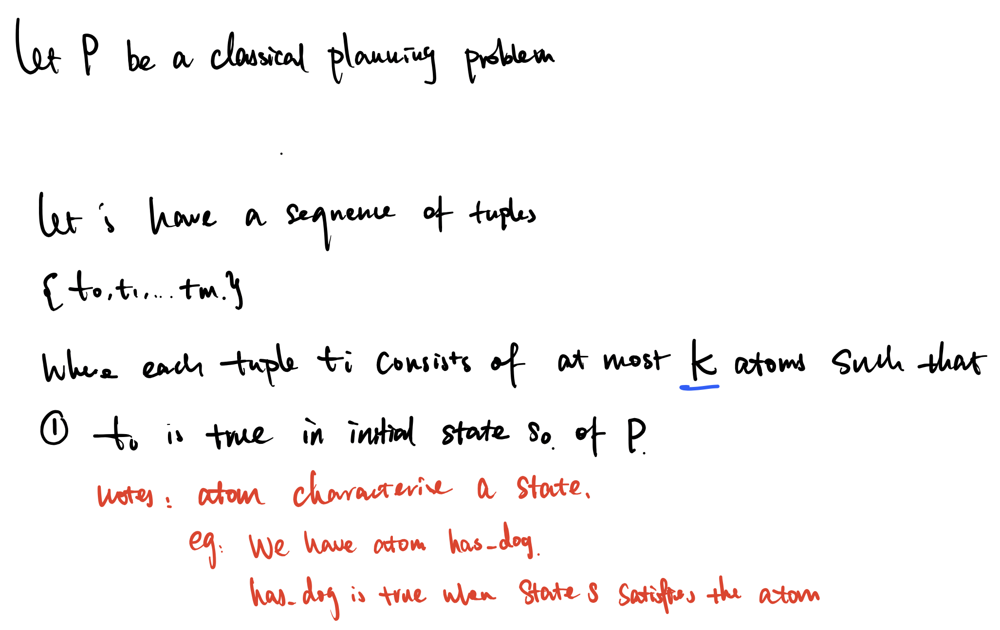
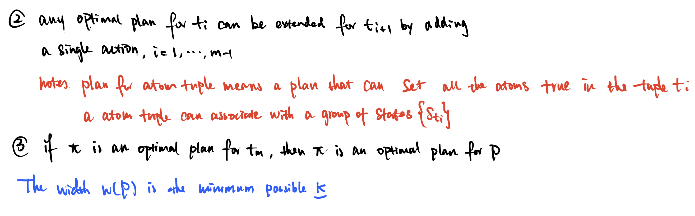
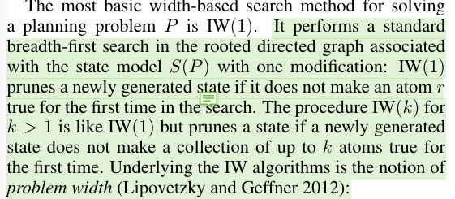
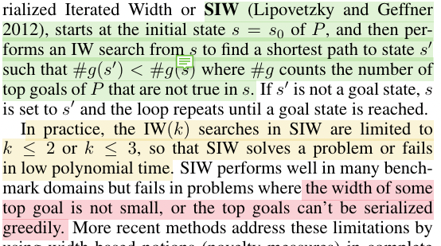
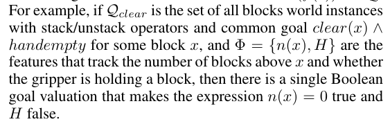
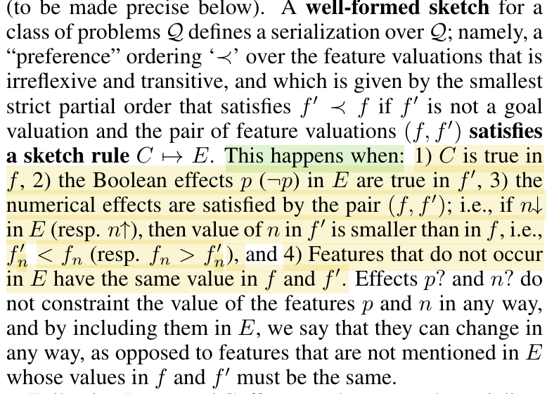

[TOC]
- Title: Expressing and Exploiting the Common Subgoal Structure of Classical Planning Domains Using Sketches
- Author: Dominik Drexler et. al.
- Publish Year: 2021
- Review Date: Dec 2021
Summary of paper
Algorithms like SIW often fail when the goal is not easily serialisable or when some of the subproblems have a high width. In this work, the author address these limitations by using a simple but powerful language for expressing finer problem decompositions called policy sketches.
Serialised Iterated With with Sketches
similar to original SIW, but the search nodes are further pruned such that the nodes must stay in policy sketches $G_r(s)$ for some pre-defined sketch rule $r$ in $R$ .
The only difference between SIW and $SIW_R$ is that in SIW each IW search finishes when the goal counter $#g$ is decremented, while in $SIW_R$ , when a goal or subgoal state is reached.
- this means that for policy sketch settings, we have to define the goal state in terms of a set of features.
All in all, Serialised Iterated With with Sketches is like adding task-dependent constraints to a general SIW search algorithm so that it can prune away unwanted states. Therefore, it solves address the following issues in SIW
- achieving a single goal atom already has a sufficiently large width
- Greedy goal serialisation generates such avoidable subproblem, including reaching unsolvable states.
Some key terms
Definition of width


IW(k) algorithm

in other words , IW(search) is about pruning based on novelty
Serialised Iterated Width SIW

features
is a function of state f(s)
the output are either
- boolean or
- non-negative integer numerical value
$f(s)$ is the feature valuation determined by a state $s$.
boolean feature valuation over set of feature $\Phi$ refers to the valuation of the boolean expression $p$ and numerical expression $n=0$.
the set of feature $\Phi$ distinguish or separate the goals if there is a set $B_Q$ of boolean feature valuations such that $s$ is a goal state iff $b(f(s)) \in B_Q$
example

in this case $B_Q = {n(x)=0, H=false}$
Sketch rule
over feature $\Phi$ has the form $C \rightarrow E$ where $C$ consists of Boolean feature conditions, and $E$ consists of feature effects. A Boolean feature condition is of the form $p$ or $\neg p$ for a boolean feature $p$ in $\Phi$ , or $n=0$ or $n>0$ for a numerical feature $n$ in $\Phi$.
A feature effect is an expression of the form
- $p,\neg p, p?$
- $n\downarrow, n\uparrow, n ?$
- downarrow means numerical decrements, uparrow means numerical increments.
in sketch rules, the effect can be delivered by longer state sequences
policy sketch
$R_\Phi$ is a collection of sketch rules over the feature $\Phi$ and the sketch is well formed if it is built from features that distinguish the goals and is terminating
- A well-formed sketch for a class of problem $Q$ defines a serialisation over $Q$.
- namely, a “preference” ordering $\prec$ over the feature valuations that is irreflexive and transitive.

it means that we move towards the goal by satisfying some goal associated features
the transition should follow the pre-defined (hand-crafted) sketch rules
subgoal states $G_r(s)$
input: a sketch rule $r$, a state $s$
output: a set of states $s’$ such that pair $(f(s) f(s’))$ satisfy the sketch rule $r$
Intuitively, when in a state $s$, the subgoal states $s’$ in $G_r(s)$ provide a stepping stone in the search for plans connecting $s$ to the goal of $P$
Potential future work
It looks like the policy sketch in planning domain will have a precise signal that tell the sub-goal is reached.
However, in Modular RL paper, the sub-policy network needs to decide by itself that it should STOP and pass the task to the next policy network.
- this definitely cause some issues. Let’s see if we are able to provide a precise STOP signal to the policy network when a sub-goal is reached.